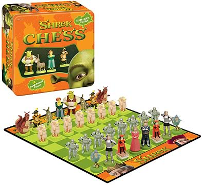

Limitations and Open Problems
One of the challenges that could be encountered would be trying to capture the chess board under more extreme conditions, like bad lighting or heavily blurred imagery. While the [3] Wolflein and Arandjelovic method allows for a high degree of accuracy under a variety of conditions, there is still the possibility that not all conditions could be accounted for. In the case for Phuc’s team [1], their accuracy was lowered to 80% under extreme conditions. Another challenge, or possible point of failure, would be having non-standard pieces shapes. Since the typical chess game uses a standardized look for its pieces and board, this eases the readability for the agent, however non-standard pieces or boards may not register. Another limitation is that by using OpenCV or some other cloud computing technology for image processing, it essentially requires the typical user to be connected to the internet. A user could theoretically have the agent run offline, however they would need a device powerful enough to perform computer vision locally.
